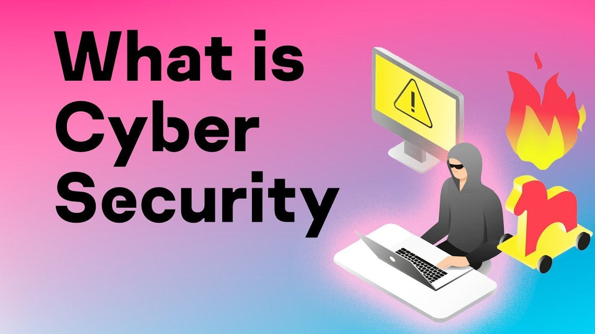

Cyber security is the practice of protecting systems, networks, and data from digital attacks, theft, and damage. It involves implementing measures such as firewalls, encryption, and antivirus software to safeguard information and ensure privacy. Additionally, it encompasses policies and procedures to detect, respond to, and recover from cyber threats. Effective cyber security maintains the integrity, confidentiality, and availability of sensitive information, defending against unauthorized access and cyber attacks.
Cyber security is crucial for safeguarding sensitive data, systems, and networks from unauthorized access, theft, and damage. It ensures the integrity, confidentiality, and availability of information, preventing financial loss, identity theft, and service disruptions. This protection maintains trust in digital interactions and infrastructure, essential for both individuals and organizations in an increasingly connected world.
Cyber attacks come in various forms, including phishing, which tricks users into revealing sensitive information; malware, which infects systems to steal data or cause damage; ransomware, which encrypts data for ransom; and DDoS attacks, which overwhelm servers to disrupt service. Each type exploits different vulnerabilities, posing significant threats to individuals and organizations alike.
You can take several proactive steps to protect yourself online. Use strong, unique passwords and enable multi-factor authentication for your accounts. Regularly update software to patch vulnerabilities. Be cautious with emails and links to avoid phishing attacks. Install reliable antivirus software and back up important data. Additionally, educate yourself on recognizing common cyber threats and practice good online hygiene to maintain a secure digital presence.

A.
It is a Malware Infection, and I would not download any attachments from that email.
B.
It is a Phising Attack, and I would call my bank to confirm about it.
C.
It is not a serious attack, and I would ignore the email completely.
D.
It is not a attack, and I would click on the link to verify my account details.
In conclusion, cyber security is vital for protecting systems, networks, and data from digital threats, including unauthorized access, theft, and damage. It involves using firewalls, encryption, antivirus software, and implementing policies to detect and respond to threats. Effective cyber security ensures the integrity, confidentiality, and availability of information, preventing financial loss, identity theft, and service disruptions. Cyber attacks, such as phishing, malware, ransomware, and DDoS attacks, exploit various vulnerabilities, posing significant risks. To protect yourself, use strong passwords, enable multi-factor authentication, update software regularly, be cautious with emails, install antivirus software, back up data, and stay informed about cyber threats. Adopting these practices helps maintain a secure digital presence in an increasingly connected world.
Made by Prayan Khowal of Class VIII-E